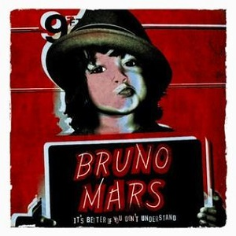
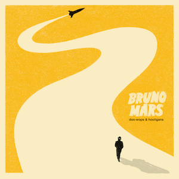
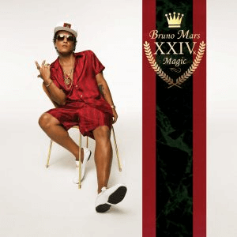
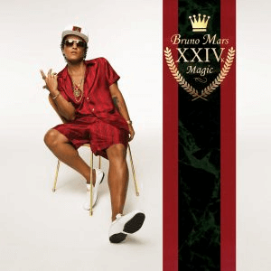
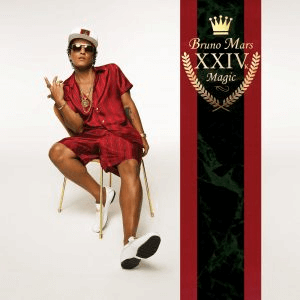

Bruno Mars and His Journey to Stardom
Photo by Daniel Gregory on Flickr.com
Bruno Mars is a successful pop artist who has recorded three studio albums and one EP. Despite being classified as a pop artist, his music is influenced by a variety of genres, like R&B, funk, soul, hip hop, reggae and rock. It takes elements from each genre of music and combines them to create cohesive, popular songs.
Music


 


It's Better If You Don't Understand
Doo-Wops & Hooligans
Unorthodox Jukebox
24K Magic